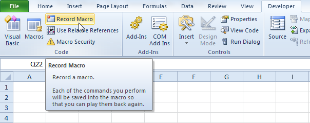
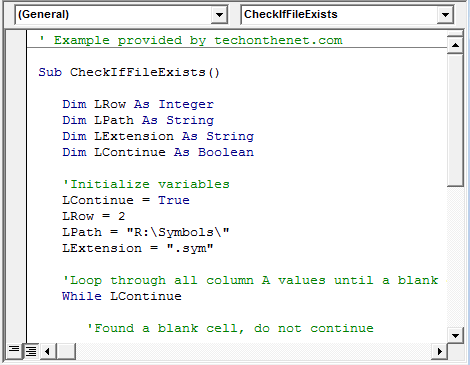
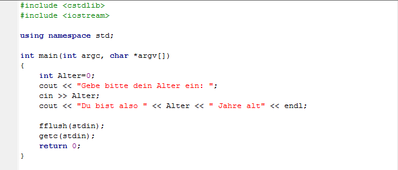
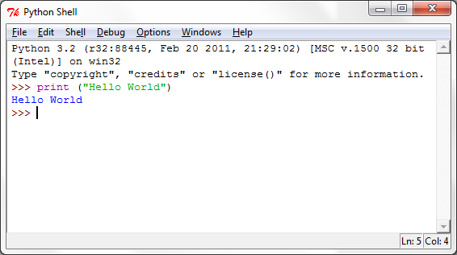

Excel Record Macro
I started my programming journey by clicking on the record macro button in Microsoft Excel. This button wrote VBA code for me based on the actions I took inside Excel. I was able to very quickly see which lines of code did what and vise versa. I created data processing buttons with just this ability with very little understanding of how to actually write code.
VBA Coding
I was eventually forced to learn how to write VBA code because of the record macro button’s limitations. I needed to learn how to write loops and “if else” statements. Larger datasets required me to learn how to optimize my code and learn how to utilize arrays and dictionaries. I also learned how to create user friendly interfaces with user-forms.
C++
I took various programming college classes and one of them was in the programming language C++. I learned sorting algorithms and object oriented programming. This furthered my understanding of best practices and writing more readable code.
Python
I recently learned the programming language Python. It is by far the cleanest and easiest to write and understand so far. Slices and list comprehensions are among the many powerful tools that I have learned about Python. The utility of the vast libraries available is also a valuable tool.
